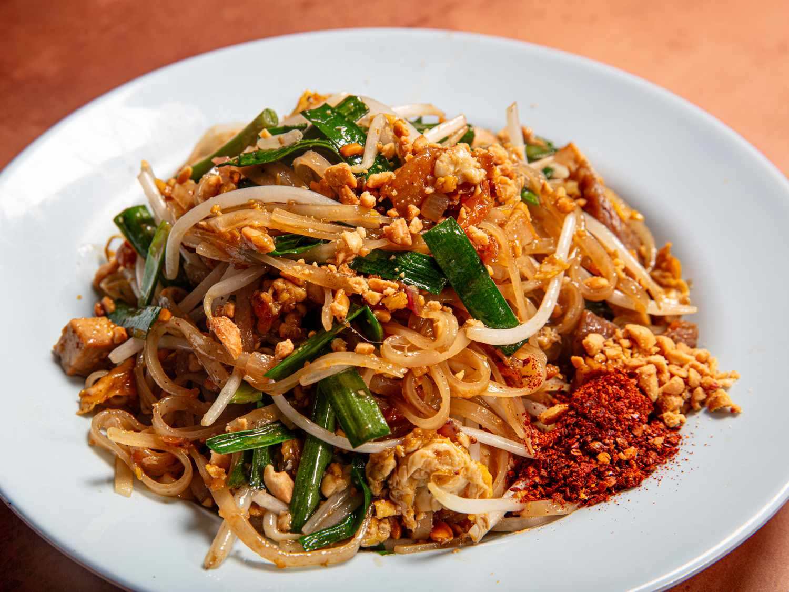

Pad Thai

Description
This iconic Thai noodle dish delivers balanced salty, sour, and sweet flavors.
Ingredients
For the Rice Noodles:
- 4 ounces (113 g) dried medium rice noodles
For the Pork:
- 4 ounces (112 g) pork shoulder, sliced very thinly into roughly 1- by 1 1/2-inch pieces (1/2 cup)
- 2 teaspoons (10 ml) fish sauce
- Pinch of granulated sugar
For the Sauce:
- 2 tablespoons (40 g) palm sugar
- 2 tablespoons (35 g) tamarind concentrate
- 2 tablespoons plus 1 teaspoon (35 ml) fish sauce
For the Stir-Fry:
- 2 tablespoons plus 1 teaspoon (35 ml) neutral oil such as canola oil
- Marinated pork, from above
- 70 g pressed tofu, cut into 1- by 1/2- by 1/4-inch pieces (1/2 cup)
- 2 packed tablespoons (25 g) sweet preserved radish
- 2 tablespoons (10 g) small or medium dried shrimp
- 1 small Asian shallot (20 g), cut into 1/4-inch dice
- 1 large egg
- Rehydrated rice noodles, from above
- Sauce, from above
- 1 tablespoon plus 2 teaspoons (25 g) water, plus more as needed
- 1 1/2 ounces (40 g) Chinese flat garlic chives, cut into 1 1/2–inch pieces (1 cup), divided
- 2 cups (80 g) mung bean sprouts, divided
- 3 tablespoons (25 g) crushed unsalted dry-roasted peanuts, plus more for serving
- Lime wedges, for serving
- Thai chile powder, for serving
- Fish sauce, for serving
Instructions
- For the Rice Noodles: In a medium bowl, cover noodles with slightly warm water (about 110°F; 43°C). Allow noodles to hydrate until pliable, about 30 minutes.
- Meanwhile, for the Pork: In a mixing bowl, stir together pork, fish sauce, and sugar until well combined.
- For the Sauce: In a small saucepan, combine palm sugar and tamarind and set over low heat, stirring until sugar is dissolved (if sugar is slow to dissolve, add 1 tablespoon water). Remove from the heat and stir in fish sauce until well combined.
- For the Stir-Fry: Heat a wok or large carbon steel or cast iron skillet over high heat until lightly smoking. Add oil and swirl to coat the surface. Immediately add pork and, using a wok spatula or large spoon, stir until about halfway cooked, about 20 seconds.
- Add tofu, sweet preserved radish, dried shrimp, and shallot and continue to stir rapidly until aromatic and heated through, about 40 seconds. Push everything to one side of wok.
- Crack egg into now-empty side of the wok, and using wok spatula or large spoon, break yolk and briefly stir to distribute yolk, then cook without stirring until egg is mostly set (you want to avoid scrambling the egg as it sets). Once set, fold the aromatic mixture over the egg, flipping and scraping with the spoon or wok spatula to ensure nothing sticks. Stir until everything is well combined and egg is broken up into smaller pieces.
- Add rehydrated noodles, then pour sauce around edges of wok followed by 1 tablespoon plus 2 teaspoons water. Continue stirring until sauce is absorbed, about 2 minutes.
- Add a 1/4 cup Chinese flat garlic chives and 1/4 cup mung bean sprouts and continue stirring until wilted, about 30 seconds.
- Turn off heat and add remaining Chinese flat garlic chives and mung bean sprouts, along with peanuts and stir to combine. Serve immediately with additional crushed peanuts, sugar, lime wedges, Thai chile powder, and fish sauce on the side.
Home